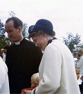

Kurt (Curt) Axel Karlsson (Carlsson)
Kyrkoherde i Piteå lfs, kontr.prost i Piteå kontrakt. teol dr 1979, medl Tempelriddarorden. Blev 75 år.
| Född: | 1932-07-22 Högsböle 3:10, Hortlax fs, Hortlax sn. [1] | Född Tvilling. |
|---|
| Examen: | 1953 Uppsala. [2] | Studentexamen. |
|---|
| Examen: | 1956 Uppsala. | Teol kand. |
|---|
| Examen: | 1979 Uppsala universitet. | Disputation. Doktorsavhandling. |
|---|
| Död: | 2007-11-06 Knektbacken 67 Nb, Hallstahammar, Bergs fs, Halstahammars kn. [3] | |
|---|
| Vigsel: | 1955-07-09. | |
|---|
| Levde: | 1957 Uppsala, Helga Trefaldighets fs, Uppsala stad. [4] | |
|---|
| Levde: | 1958 Komministergården, Råneå, Råneå nedre kbfd, Råneå sn. [4] | Komminister från senare delen av 1957. |
|---|
| Komminister: | 1962 Örnäsets fs, Luleå kn. [2] | |
|---|
| Levde: | 1971 Hortlax, Hortlax fs, Piteå kn. [5] | |
|---|
| Levde: | 1981 Sankt Lars 3, Prästgårdsg 20, Hallstahammar, Hallstahammars fs, Hallstahammars kn. [6] | |
|---|
| Levde: | 1991 Kyrkobordet 3:1, Södra Björklundav 8, Öjebyn, Piteå lfs, Piteå kn. [7] | |
|---|
| Barn: |
|---|
| Signe Christina Karlsson (1961 - ) |
| Kurt Gunnar Karlsson (1965 - ) |
Noteringar
Bibliografi
Samhörighet och separation, Curt Carlsson, 1979
Evangeliska fosterlandsstiftelsen och svenska kyrkan i pitebygden och skelleftebygden, 292 s. Avhandling, Uppsala univ.
Prosten Axel Sandins minnen, "Från Daretorp till Piteå lands...", Curt Carlsson, 1983, 27 s.
Arbetarnas bildningsförbund (Piteåbygden) (redaktör/utgivare) Piteå : Piteåbygdens ABF
Hur kyrkan kan möta arbetslösheten : Curt Carlsson, Hallstahammar, 1984, 63 s.
Piteå landsförsamling 1339-1989 = 650 år / Curt Carlsson
Carlsson, Curt, 1932- (författare) Svenska. Ingår i: Årsbok / Pitebygdens fornminnesförening. - 0280-6843. ; 1989, s. 8-17 : ill.
I Nicolaus Bothniensis fotspår, Curt Carlsson, 1992, 109 s.
ISBN 91-7580-082-9 (inb), Skellefteå : Artos
Norrländska kyrkomän vid Uppsala möte 1593 / Curt Carlsson
Carlsson, Curt, 1932- (författare) Svenska. Ingår i: Årsbok / Pitebygdens fornminnesförening. - 0280-6843. ; 1993, s. 121-126 : ill. Artikel
Gustaf Höijer präst i Piteå förs. 1876 - 1897 Kyrkoherde i Skellefteå förs. 97 - 98, Curt Carlsson, 1997
Piteå församling - en resa genom 1000 år, Curt Carlsson, 1999, 100 s.
ISBN 91-630-8876-2[Hortlax] : C. Carlsson, 1999Svenska 100 s.
________________________________________________________
Piteå Förre kontraktsprosten i Pite kontrakt och kyrkoherden i Piteå landsförsamling Curt Carlsson, Hallstahammar, har hastigt avlidit i en ålder av 75 år.
I september i år beslutade han sig för att bryta upp från Pitebygden och sitt hus i Pitsund för att bosätta sig i Hallstahammar då han ville komma närmare sina barn med familjer.
Curt Carlsson fick en smått dramatisk födelse. Han ansågs nämligen vid födseln så svag att han lämnades för att dö, men kunde genom rådigt ingripande av en faster fortsätta leva.
Som själasörjare sedan 1956 arbetade han ivrigt för att kyrkan skall lämna spår i tillvaron. På olika, och ibland uppmärksammade sätt, arbetade han för att nå den moderna människan med Guds ord.
Han hade ett starkt engagemang inom kyrkan på olika nivåer.
Inom kyrkopolitiken, en tid som representant för socialdemokraterna, var Carlsson opinionsbildare och försökte också själv bilda opinion i viktiga frågor.
Efter prästvigningen var Curt Carlsson verksam i Råneå, i Örnäsets församling, Luleå, och därefter som kyrkoherde i Hortlax och i Hallstahammar samt som kontraktsprost i Munktorps kontrakt innan hembygden åter lockade med tjänsten som kyrkoherde i Piteå landsförsamling och sedan som prost i Pite kontrakt. Curt Carlsson fanns även med, förutom i församlingsarbetet, som ledamot i kyrkomötet under tio år och satt också i kyrkans centralstyrelse.
Han bedrev kyrkohistorisk forskning och skrev böcker om Pitebygdens kyrkohistoria, om kyrkan och arbetslösa samt om kyrkan och invandrarna.
Även den andliga väckelsen satte spår i hans författarskap.
Han sammanställde även en skrift om hustrun Signes livsresa.
Han sörjes närmast av två barn med familjer samt syskon och syskonbarn.
www.nsd.se/nyheter/curt-carlsson-3587223.aspx
Personhistoria
| Årtal | Ålder | Händelse |
|---|
| 1932 |
|
Brodern Per Olof Karlsson föds 1932-07-22 Högsböle 3:10, Piteå, Piteå lfs, Piteå sn [8] |
| 1932 |
|
Födelse 1932-07-22 Högsböle 3:10, Hortlax fs, Hortlax sn [1] |
| 1935 |
3 år |
Fadern Frans August Georg Karlsson dör 1935-12-30 Högsböle 3, Hortlax fs, Hortlax sn |
| 1953 |
|
Examen 1953 Uppsala [2] |
| 1955 |
22 år |
Vigsel Signe Marianne Lundberg 1955-07-09 |
| 1956 |
|
Examen 1956 Uppsala |
| 1957 |
|
Levde Signe Marianne Lundberg 1957 Uppsala, Helga Trefaldighets fs, Uppsala stad [4] |
| 1958 |
|
Levde Signe Marianne Lundberg 1958 Komministergården, Råneå, Råneå nedre kbfd, Råneå sn [4] |
| 1961 |
28 år |
Dottern Signe Christina Karlsson föds 1961-05-28 Gällivare fs (BD) [5] |
| 1962 |
|
Komminister Signe Marianne Lundberg 1962 Örnäsets fs, Luleå kn [2] |
| 1965 |
33 år |
Sonen Kurt Gunnar Karlsson föds 1965-10-12 Vittangi fs, Kiruna kn [5] |
| 1971 |
|
Levde Signe Marianne Lundberg 1971 Hortlax, Hortlax fs, Piteå kn [5] |
| 1979 |
|
Examen 1979 Uppsala universitet |
| 1981 |
|
Levde Signe Marianne Lundberg 1981 Sankt Lars 3, Prästgårdsg 20, Hallstahammar, Hallstahammars fs, Hallstahammars kn [6] |
| 1988 |
55 år |
Modern Greta Adela Lundström dör 1988-05-04 Hortlax fs, Piteå kn [9] |
| 1991 |
|
Levde Signe Marianne Lundberg 1991 Kyrkobordet 3:1, Södra Björklundav 8, Öjebyn, Piteå lfs, Piteå kn [7] |
| 2004 |
72 år |
Makan Signe Marianne Lundberg dör 2004-08-14 Pitsund 12, Hortlax, Hortlax fs, Piteå kn [10] |
| 2007 |
75 år |
Död 2007-11-06 Knektbacken 67 Nb, Hallstahammar, Bergs fs, Halstahammars kn [3] |
Dokument
Källor
| [1] | https://sok.riksarkivet.se/bildvisning/F0009771_00229?c=0&m=0&s=0&cv=0#?cv=228&z=235.4949%2C624.2024%2C3685.6521%2C2296.2963 |
| |
| | |
| [2] | http://runeberg.org/vemarvem/norr68/0090.html |
| |
| | |
| [3] | FK 09 / man91 |
| |
| | |
| [4] | Mtl Sveriges befolkning 1960 |
| |
| | |
| [5] | Mtl Norrbottens län 1971 |
| |
| | |
| [6] | Mtl Västmanlands län 1981 |
| |
| | |
| [7] | Mantalslängd 1991, Norrbottens län |
| |
| | |
| [8] | https://sok.riksarkivet.se/bildvisning/F0009771_00229?c=0&m=0&s=0&cv=0#?cv=228&z=378.2656%2C672.346%2C2559.4806%2C1594.6502 |
| |
| | |
| [9] | RTB 88 / SPAR 90 |
| |
| | |
| [10] | man91 / RFV 06 |
| |
|
|  |
1971. Curt Carlsson f. i Pitsund 1932-07-22 d. 2007-11-06. Makan Signe f. Lundberg i Blåsmark 1928-03-18 d. 2004-08-14.
Curt Carlsson verkade även i Hallstahammar några år. Men återbördades till hembygden, då verksam i Piteå landsförsamling.
Signe Carlsson var verksam som Diakonissa. Paret vilar i en familjegrav på kyrkogården i Hortlax.
|
|